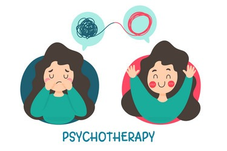
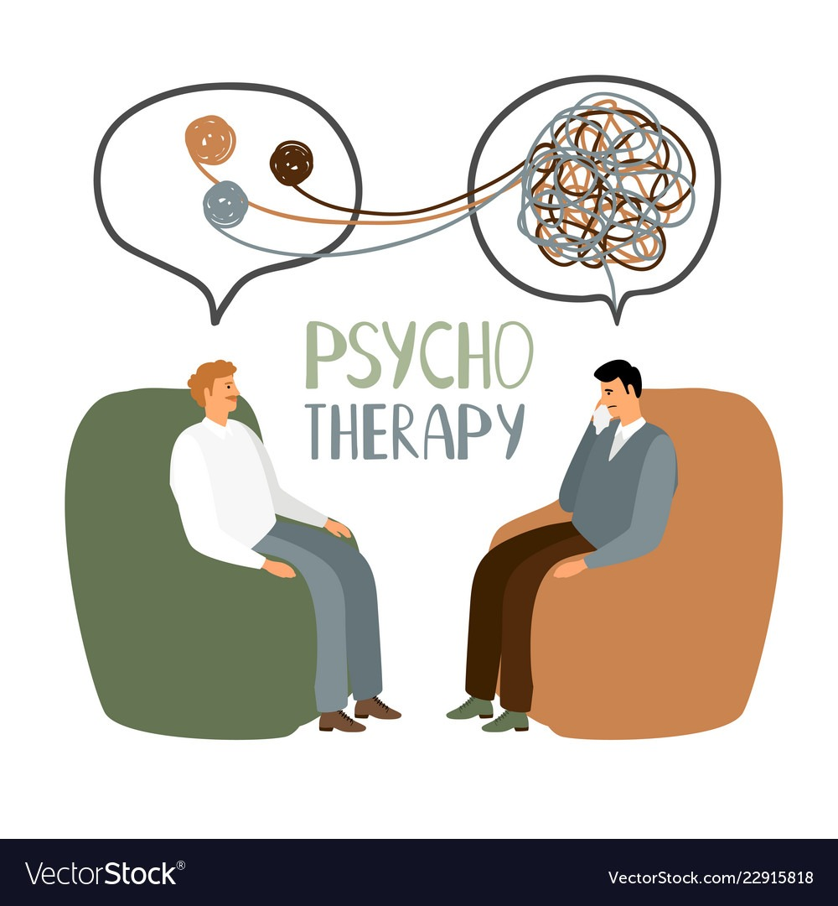
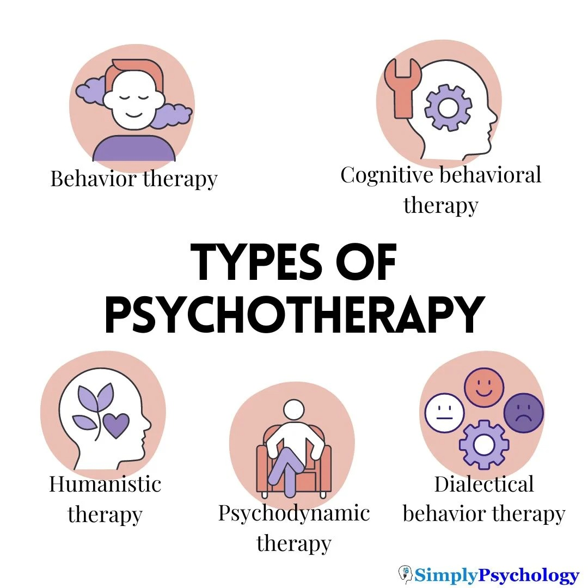

What is psychotherapy?
- a variety of treatments that aim to help a person identify and change troubling emotions, thoughts, and behaviors
- Psychotherapy is a type of treatment that can help individuals experiencing a wide array of mental health conditions and emotional challenges. Psychotherapy can help not only alleviate symptoms, but also, certain types of psychotherapies can help identify the psychological root causes of one’s condition so a person can function better and have enhanced emotional well-being and healing
- Conditions that can be helped by psychotherapy include coping with stressful life events, the impact of trauma, medical illness or loss such as the death of a loved one; and specific mental health conditions such as depression or anxiety. There are several different types of psychotherapy and some types may work better with certain clinical situations. Psychotherapy may be used in combination with medication or other therapies.
Causes of Psychotherapy
The causes of Psychotherapy are not fully understood There are several theories about the causes of Psychotherapy, including:
- Depression is a mental state of low mood and aversion to activity. It affects more than 280 million people of all ages. Depression affects a person's thoughts, behavior, feelings, and sense of well-being.
- Bipolar disorder, previously known as manic depression, is a mental disorder characterized by periods of depression and periods of abnormally elevated mood that each last from days to weeks.
- Anxiety disorders · Bipolar disorder; Depression; Eating disorders; Obsessive-compulsive disorder; Phobias; Post-traumatic stress
- experiencing acute stress; having a lack of successful coping strategies; having a close relative with depression; using some prescription drugs
It is possible that several factors interact to trigger the development of Psychotherapy . The underlying causes may be further influenced by stressful life events, hormonal changes and personality traits.
Common Symptoms
Common symptoms of mental disorders include...
- crying, becoming upset or even having an angry outburst during a session
- Overthinking and feeling as though you're unable to 'switch off' from your thoughts.
- Getting angry more easily or struggling to regulate your emotions
- Dealing with severe or long-term stress from a job or family situation, the loss of a loved one, or relationship or family problems.
- Changes in arousal and reactivity, including being easily irritated, experiencing angry outbursts; behaving recklessly or in a self-destructive manner.
- being hypervigilant or easily startled; or having difficulties concentrating or sleeping.



Treatment For psychotherapy
If you encounter someone experiencing a psychotherapy crisis...
- refers to a variety of treatments that aim to help a person identify and change troubling emotions, thoughts, and behaviors
- Therapy is the tool that the medical community uses to rehabilitate patients.
- Do a psychological evaluation
First-Aid For psychotherapy
If you encounter someone experiencing a psychotherapy crisis..
- Connectedness
- Distract with activities.
- Stay patient and supportive.
- Encourage professional help.
- addresses basic needs and reduces psychological distress by providing a caring comforting presence, and education on common stress reactions.